Yapay Zekâ
Kendi kendine yirmi milyondan fazla oyunla (TD öğrenmesi) ve kendi benzetimleriyle eğitilmiş sinir ağları, 54.264 konumluk kesin toplama veritabanı, maç skoruna göre küp ve pes kararları.
Türk ve Uluslararası Tavla · macOS ve iPadOS
Pul ve Zar, baştan sona Swift ve Metal ile yazılmış, üç boyutlu bir Türk ve uluslararası tavla oyunudur. Tahta, pullar, zarlar, zar kupası, oda, ahşap dokular, ses efektleri ve fon müziği tamamen kodla üretilir; hiçbir hazır görsel, model ya da ses dosyası kullanılmaz.
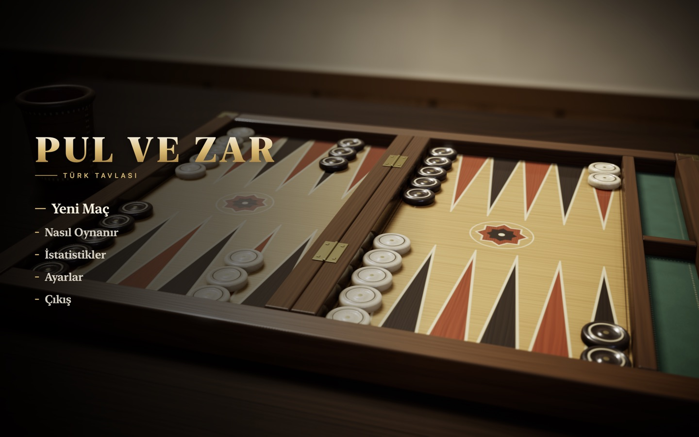
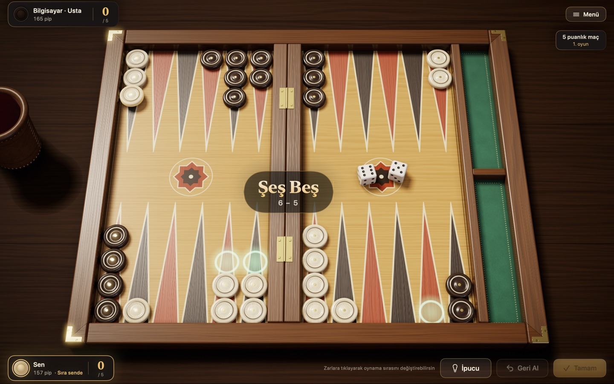
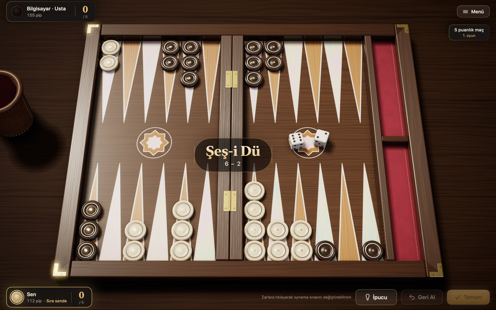
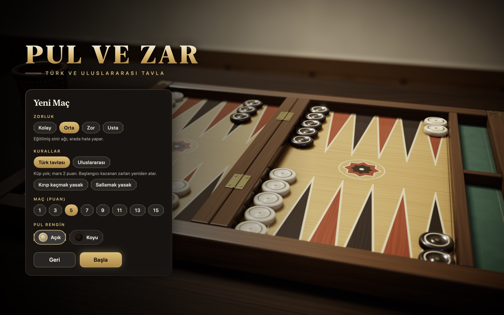
Kendi kendine yirmi milyondan fazla oyunla (TD öğrenmesi) ve kendi benzetimleriyle eğitilmiş sinir ağları, 54.264 konumluk kesin toplama veritabanı, maç skoruna göre küp ve pes kararları.
Türk ve uluslararası kurallar (vido küpü, katmerli mars, Crawford), 15 puana dek maçlar ve oturumlar (Jacoby, beaver, raccoon, otomatik vido), pes, ipucu, hamle geçmişi ve yeniden izleme, dışa aktarma (.mat, .sgf) ve içe aktarma (.mat, .sgf, .xg), birden çok kayıtlı maç ve arşiv.
Oyun ve maç sonunda bütün hamlelerin analizi: oyun notu, yaklaşık PR ve her hatanın tahtada incelenmesi (en iyi hamle işaretli, adaylar kayıplarıyla, nedeni bir cümleyle). Hatayı anında yakalayan Eğitmen; adayları binlerce benzetimle yeniden tartan Derin İnceleme ve Tam Benzetim.
Her gün yenilenen Günün Konumu; kendi hatalarınızdan oluşan ve aralıklı tekrarla dönen Kartlar; Açılış Kitaplığı ve Konum Düzenleyici; kaydettiğiniz konumlar ve maçlar için aranabilir Kütüphane; arşivin toplu analizi ve PR eğilimi; konumu ya da sonucu görüntü olarak paylaşma.
Metal ile fiziksel tabanlı aydınlatma, lambadan türeyen yumuşak gölgeler, zamansal kenar yumuşatma, HDR, yordamsal oda ve masa, kupadan dökülen zarlar, sinematik kamera.
Fiziksel modellemeyle sentezlenen efektler; malzemeye göre tınılar, odanın ölçülerinden hesaplanan yankı; Karplus‑Strong ud taksimi Nihavend'den Hicaz, Rast, Uşşak ve Hüseyni'ye geçer; isteğe bağlı yağmur.
Kurallardan çalışma araçlarına, Pul ve Zar'ın bütün özellikleri.
Uygulamanın kendi sunucusu yok, hesap istemez; reklam, izleme ya da analitik yok. Verilerin cihazında kalır; istersen kendi iCloud Drive'ın üzerinden cihazların arasında eşitlenir.
Tavlanın kuralları, oyun planları ve Pul ve Zar'ın kullanımı, altı bölümlük resimli bir kitapta. Kitabı uygulamanın desteklediği dokuz dilde çevrimiçi okuyabilir ya da PDF olarak indirebilirsiniz; her dilde görüntüler o dildeki uygulamadan alınmıştır.
78 sayfa · 16,0 MB · PDF
Öbür dillerde: English · Français · Deutsch · Español · Português (Brasil) · Italiano · Ελληνικά · Русский
Turkish and International Backgammon · macOS and iPadOS
Checkers and Dice is a three-dimensional Turkish and international backgammon game written from scratch in Swift and Metal. The board, checkers, dice, dice cup, room, wood grain, sound effects and music are all generated in code; no ready-made images, models or audio files are used.


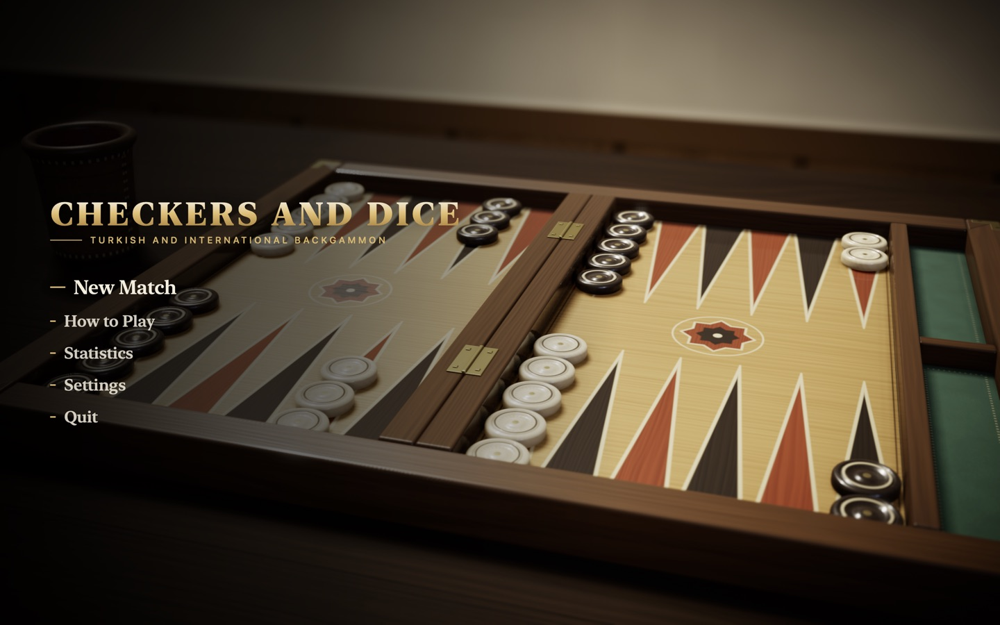
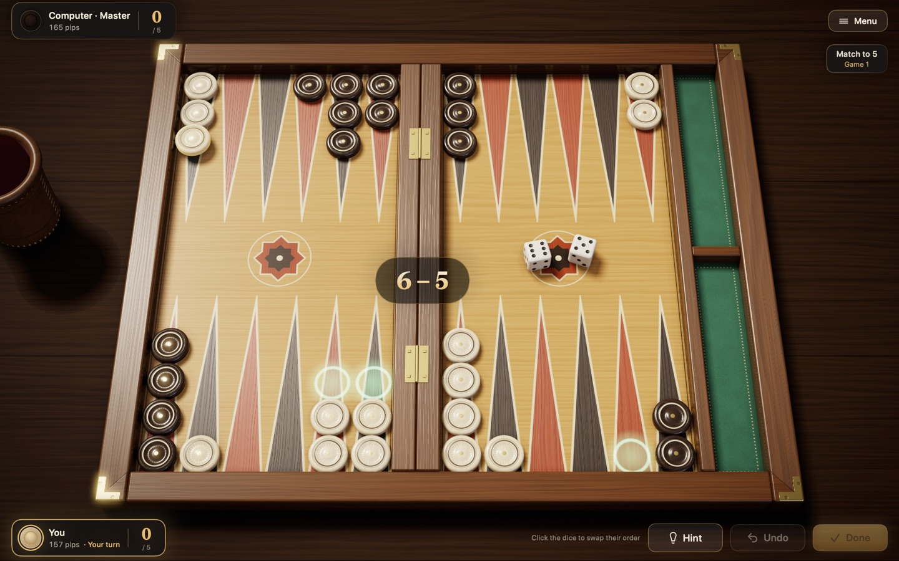
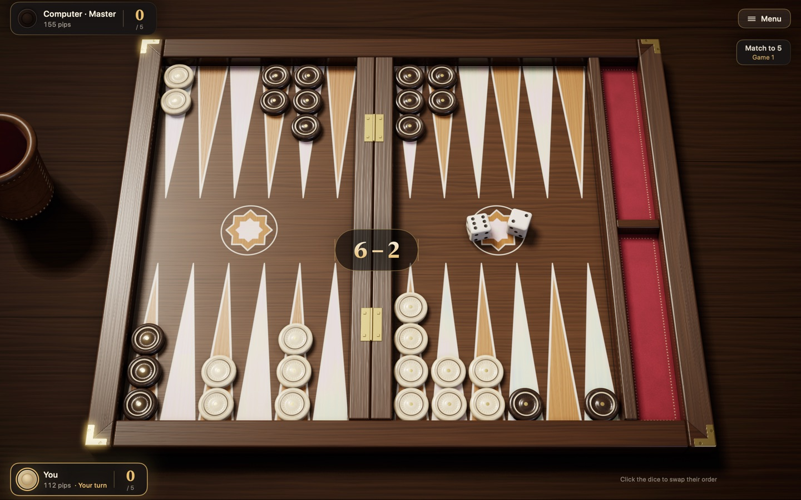
Neural networks trained through more than twenty million games of self-play (TD learning) and on their own rollouts, an exact 54,264-position bear-off database, cube and resignation decisions aware of the match score.
Turkish and international rules (doubling cube, backgammon, Crawford), matches up to 15 points and sessions (Jacoby, beaver, raccoon, automatic doubles), resignation, hints, move history with replay, export (.mat, .sgf) and import (.mat, .sgf, .xg), multiple saved matches and an archive.
Every move analyzed after each game and match: a game grade, an approximate PR and every mistake on the board (best move marked, candidates with their losses, a sentence that explains why). The Coach that catches mistakes as you make them; Deep Review and Full Rollout re-weighing the candidates with thousands of simulated games.
A new Daily Position every day; Flashcards made from your own mistakes and brought back with spaced repetition; the Opening Library and the Position Editor; a searchable Library of your saved positions and matches; whole-archive analysis and your PR trend; positions and results shared as images.
Physically based lighting, lamp-sized soft shadows, temporal anti-aliasing, HDR, a procedural room and table, dice poured from a cup, cinematic camera moments, all rendered with Metal.
Physically modelled effects with material-specific tones and reverb computed from the room; a Karplus‑Strong oud taqsim moving from Nihavend to Hicaz, Rast, Uşşak and Hüseyni; optional rain.
Everything in Checkers and Dice, from the rules to the practice tools.
The app has no server of its own and needs no account; no ads, no tracking, no analytics. Your data stays on your device and, if you like, syncs between your devices through your own iCloud Drive.
The rules of backgammon, game plans and how to use Checkers and Dice, in an illustrated book of six chapters. Read it online or download the PDF in any of the app's nine languages; each edition shows the app in its own language.
83 pages · 16.0 MB · PDF
In other languages: Türkçe · Français · Deutsch · Español · Português (Brasil) · Italiano · Ελληνικά · Русский
Backgammon turc et international · macOS et iPadOS
Pions et Dés est un backgammon turc et international en trois dimensions, écrit de A à Z en Swift et Metal. Le plateau, les pions, les dés, le cornet, la pièce, le veinage du bois, les effets sonores et la musique sont entièrement générés par le code ; aucune image, aucun modèle ni aucun fichier audio tout fait n’est utilisé.


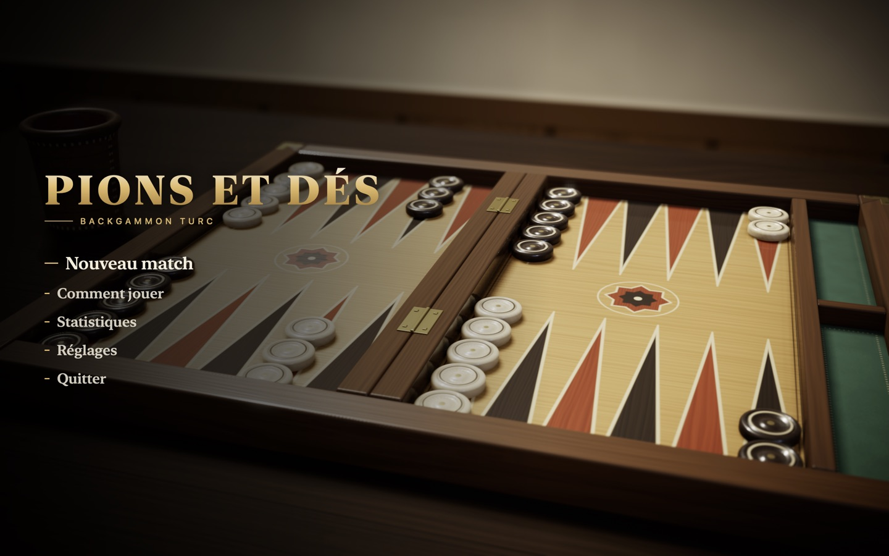
Des réseaux de neurones entraînés sur plus de vingt millions de parties jouées contre eux-mêmes (apprentissage TD) et sur leurs propres rollouts, une base exacte de 54 264 positions pour la sortie des pions, des décisions de videau et d’abandon qui tiennent compte du score du match.
Règles turques et internationales (videau, backgammon, Crawford), matchs jusqu’à 15 points et sessions (Jacoby, beaver, raccoon, doubles automatiques), abandon, indices, historique des coups avec relecture, export (.mat, .sgf) et import (.mat, .sgf, .xg), plusieurs matchs enregistrés et des archives.
Tous vos coups analysés après chaque partie et chaque match : note, PR approximatif et chaque erreur sur le plateau (meilleur coup marqué, candidats avec leurs pertes et une phrase qui explique pourquoi). L’Entraîneur qui détecte vos erreurs sur le moment ; l’Analyse approfondie et le Rollout complet qui réévaluent les candidats sur des milliers de parties simulées.
Une nouvelle Position du jour chaque jour ; des Cartes tirées de vos erreurs, qui reviennent en répétition espacée ; la Bibliothèque des ouvertures et l’Éditeur de position ; une Bibliothèque de vos positions et matchs enregistrés, avec recherche ; l’analyse de toute l’archive et votre tendance PR ; le partage d’une position ou d’un résultat en image.
Éclairage physiquement réaliste, ombres douces à la taille de la lampe, anticrénelage temporel, HDR, pièce et table procédurales, dés versés d’un cornet et moments de caméra cinématiques, le tout rendu avec Metal.
Effets modélisés physiquement, timbres propres à chaque matière et réverbération calculée d’après la pièce ; un taqsim d’oud Karplus‑Strong qui passe du Nihavend au Hicaz, au Rast, à l’Uşşak et au Hüseyni ; pluie en option.
Tout ce que propose Pions et Dés, des règles aux outils d’entraînement.
L’app n’a pas de serveur propre et ne demande aucun compte ; ni publicité, ni pistage, ni analyse. Vos données restent sur votre appareil et peuvent se synchroniser entre vos appareils via votre iCloud Drive.
Les règles du backgammon, les plans de jeu et l’utilisation de Pions et Dés, dans un livre illustré en six chapitres. Lisez-le en ligne ou téléchargez le PDF dans l’une des neuf langues de l’app ; chaque édition montre l’app dans sa langue.
Lire en ligneTélécharger le PDF
85 pages · 16,2 Mo · PDF
Dans d’autres langues : Türkçe · English · Deutsch · Español · Português (Brasil) · Italiano · Ελληνικά · Русский
Questions, suggestions et signalements de bugs : hasan_altintas@hotmail.com
Türkisches und internationales Backgammon · macOS und iPadOS
Steine und Würfel ist ein dreidimensionales türkisches und internationales Backgammon, von Grund auf in Swift und Metal geschrieben. Brett, Steine, Würfel, Würfelbecher, Raum, Holzmaserung, Soundeffekte und Musik entstehen vollständig im Code; es werden keine fertigen Bilder, Modelle oder Audiodateien verwendet.


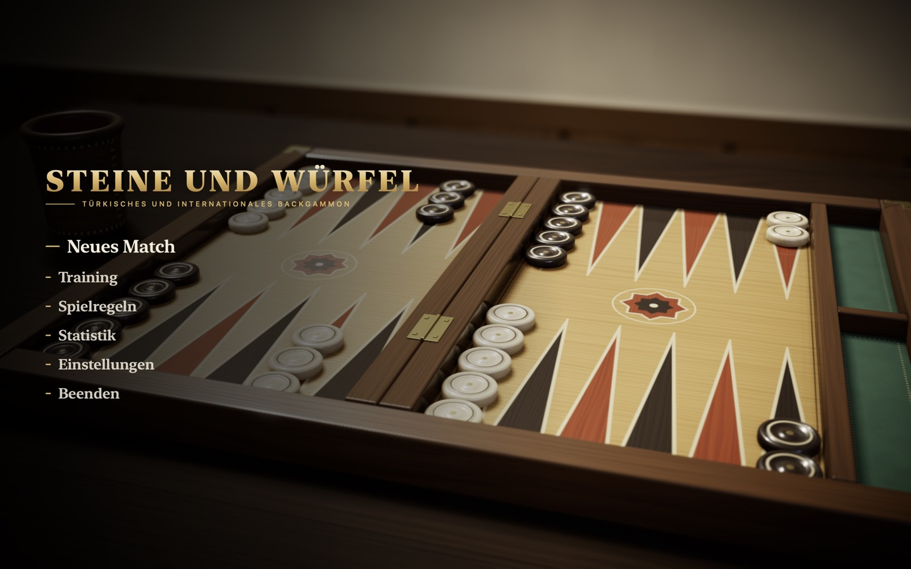
Neuronale Netze, trainiert mit über zwanzig Millionen Partien gegen sich selbst (TD-Lernen) und mit eigenen Rollouts, eine exakte Auswürfel-Datenbank mit 54.264 Stellungen sowie Doppler- und Aufgabeentscheidungen, die den Matchstand berücksichtigen.
Türkische und internationale Regeln (Dopplerwürfel, Backgammon, Crawford), Matches bis 15 Punkte und Sitzungen (Jacoby, Beaver, Raccoon, automatische Verdopplung), Aufgeben, Tipps, Zugverlauf mit Wiedergabe, Export (.mat, .sgf) und Import (.mat, .sgf, .xg), mehrere gespeicherte Matches und ein Archiv.
Jeder Zug analysiert, nach jedem Spiel und Match: Note, ungefährer PR und jeder Fehler auf dem Brett (bester Zug markiert, Kandidaten mit ihren Verlusten und ein Satz, der erklärt, warum). Der Trainer, der Fehler sofort erkennt; Tiefenanalyse und Vollständiges Rollout, die die Kandidaten mit Tausenden simulierter Spiele neu bewerten.
Jeden Tag eine neue Stellung des Tages; Karten aus deinen eigenen Fehlern mit verteiltem Wiederholen; die Eröffnungsbibliothek und der Positionseditor; eine durchsuchbare Bibliothek deiner gespeicherten Stellungen und Matches; die Analyse des ganzen Archivs auf einmal und dein PR-Verlauf; Stellungen und Ergebnisse als Bild teilen.
Physikalisch basierte Beleuchtung, weiche Schatten in Lampengröße, temporales Anti-Aliasing, HDR, prozeduraler Raum und Tisch, aus dem Becher geschüttete Würfel und filmische Kameramomente, alles mit Metal gerendert.
Physikalisch modellierte Effekte mit materialtypischen Klangfarben und aus dem Raum berechnetem Hall; ein Karplus‑Strong-Oud-Taqsim, der von Nihavend zu Hicaz, Rast, Uşşak und Hüseyni wechselt; Regen auf Wunsch.
Alles, was Steine und Würfel bietet, von den Regeln bis zu den Trainingswerkzeugen.
Die App hat keinen eigenen Server und braucht kein Konto; keine Werbung, kein Tracking, keine Analyse. Deine Daten bleiben auf deinem Gerät und lassen sich über dein iCloud Drive zwischen deinen Geräten synchronisieren.
Die Regeln des Backgammon, Spielpläne und die Bedienung von Steine und Würfel in einem bebilderten Buch mit sechs Kapiteln. Lies es online oder lade das PDF in einer der neun Sprachen der App herunter; jede Ausgabe zeigt die App in ihrer Sprache.
88 Seiten · 16,2 MB · PDF
In anderen Sprachen: Türkçe · English · Français · Español · Português (Brasil) · Italiano · Ελληνικά · Русский
Backgammon turco e internacional · macOS y iPadOS
Fichas y Dados es un backgammon turco e internacional en tres dimensiones, escrito desde cero en Swift y Metal. El tablero, las fichas, los dados, el cubilete, la sala, las vetas de la madera, los efectos de sonido y la música se generan íntegramente con código; no se usan imágenes, modelos ni archivos de audio prefabricados.


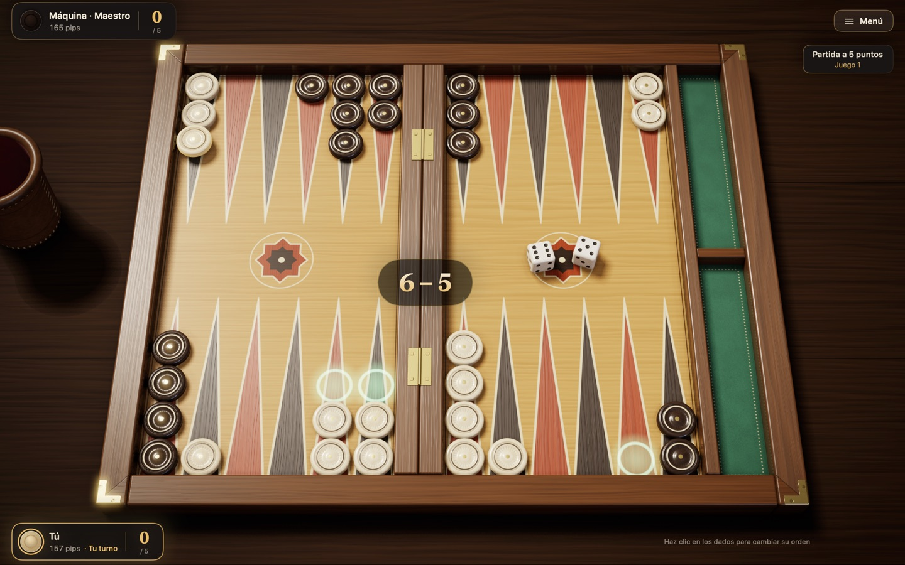
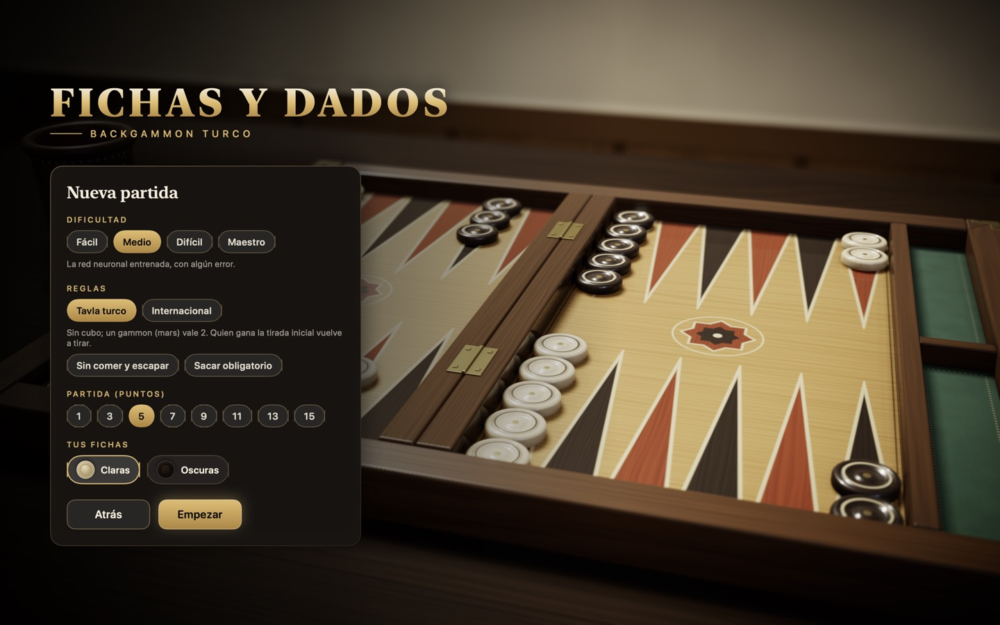
Redes neuronales entrenadas con más de veinte millones de partidas contra sí mismas (aprendizaje TD) y con sus propios rollouts, una base de datos exacta de 54.264 posiciones para sacar fichas y decisiones de cubo y de rendición que tienen en cuenta el marcador.
Reglas turcas e internacionales (cubo doblador, backgammon, Crawford), partidas de hasta 15 puntos y sesiones (Jacoby, beaver, raccoon, dobles automáticos), rendición, pistas, historial de jugadas con repetición, exportación (.mat, .sgf) e importación (.mat, .sgf, .xg), varias partidas guardadas y un archivo.
Todas tus jugadas analizadas tras cada juego y cada partida: nota, PR aproximado y cada error en el tablero (mejor jugada marcada, candidatas con sus pérdidas y una frase que explica por qué). El Entrenador, que detecta tus errores al momento; el Análisis profundo y el Rollout completo, que reevalúan las candidatas con miles de partidas simuladas.
Una nueva Posición del día cada día; Tarjetas hechas con tus propios errores que vuelven con repetición espaciada; la Biblioteca de aperturas y el Editor de posiciones; una Biblioteca con búsqueda de tus posiciones y partidas guardadas; el análisis de todo el archivo de una vez y tu tendencia de PR; posiciones y resultados para compartir como imagen.
Iluminación basada en la física, sombras suaves del tamaño de la lámpara, antialiasing temporal, HDR, sala y mesa procedurales, dados vertidos desde un cubilete y momentos de cámara cinematográficos, todo renderizado con Metal.
Efectos modelados físicamente, con timbres propios de cada material y una reverberación calculada a partir de la sala; un taqsim de oud Karplus‑Strong que pasa de Nihavend a Hicaz, Rast, Uşşak y Hüseyni; lluvia opcional.
Todo lo que ofrece Fichas y Dados, desde las reglas hasta las herramientas de práctica.
La app no tiene servidor propio ni pide cuenta; sin anuncios, sin rastreo ni analítica. Tus datos se quedan en tu dispositivo y pueden sincronizarse entre tus dispositivos con tu iCloud Drive.
Las reglas del backgammon, los planes de juego y cómo usar Fichas y Dados, en un libro ilustrado de seis capítulos. Léelo en línea o descarga el PDF en cualquiera de los nueve idiomas de la app; cada edición muestra la app en su idioma.
83 páginas · 16,1 MB · PDF
En otros idiomas: Türkçe · English · Français · Deutsch · Português (Brasil) · Italiano · Ελληνικά · Русский
Preguntas, sugerencias e informes de errores: hasan_altintas@hotmail.com
Gamão turco e internacional · macOS e iPadOS
Peças e Dados é um gamão turco e internacional em três dimensões, escrito do zero em Swift e Metal. O tabuleiro, as peças, os dados, o copo, a sala, os veios da madeira, os efeitos sonoros e a música são todos gerados por código; não se usa nenhuma imagem, modelo ou arquivo de áudio pronto.
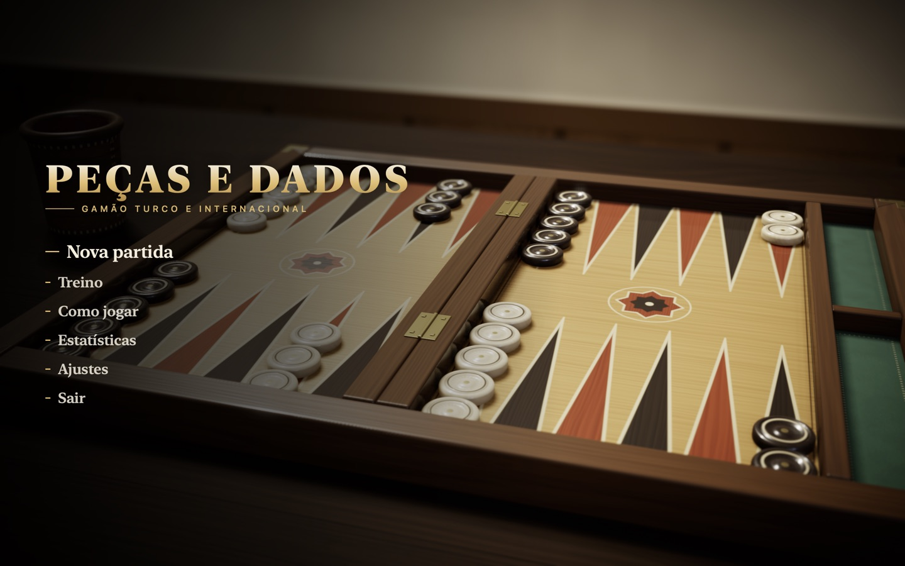
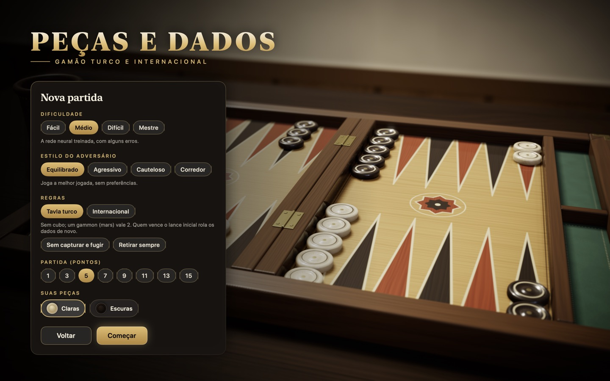
Redes neurais treinadas com mais de vinte milhões de partidas contra si mesmas (aprendizado TD) e com seus próprios rollouts, um banco de dados exato de 54.264 posições para a retirada das peças e decisões de cubo e de desistência que levam em conta o placar.
Regras turcas e internacionais (cubo de dobra, backgammon, Crawford), partidas de até 15 pontos e sessões (Jacoby, beaver, raccoon, dobras automáticas), desistência, dicas, histórico de jogadas com replay, exportação (.mat, .sgf) e importação (.mat, .sgf, .xg), várias partidas salvas e um arquivo.
Todas as suas jogadas analisadas depois de cada jogo e partida: nota do jogo, PR aproximado e cada erro no tabuleiro (melhor jogada marcada, candidatas com suas perdas e uma frase que explica por quê). O Treinador, que detecta erros na hora; a Análise profunda e o Rollout completo, que reavaliam as candidatas com milhares de partidas simuladas.
Uma nova Posição do dia todos os dias; Cartões feitos dos seus próprios erros que voltam com repetição espaçada; a Biblioteca de aberturas e o Editor de posições; uma Biblioteca com busca para suas posições e partidas salvas; a análise de todo o arquivo de uma vez e sua tendência de PR; posições e resultados compartilhados como imagem.
Iluminação fisicamente baseada, sombras suaves do tamanho da luminária, anti-aliasing temporal, HDR, sala e mesa procedurais, dados despejados de um copo e momentos de câmera cinematográficos, tudo renderizado com Metal.
Efeitos modelados fisicamente, com timbres próprios de cada material e reverberação calculada a partir da sala; um taqsim de oud Karplus‑Strong que passa de Nihavend a Hicaz, Rast, Uşşak e Hüseyni; chuva opcional.
Tudo o que o Peças e Dados oferece, das regras às ferramentas de treino.
O app não tem servidor próprio nem pede conta; sem anúncios, sem rastreamento nem análise. Seus dados ficam no seu dispositivo e, se você quiser, são sincronizados entre seus dispositivos pelo seu próprio iCloud Drive.
As regras do gamão, os planos de jogo e como usar o Peças e Dados, em um livro ilustrado de seis capítulos. Leia on-line ou baixe o PDF em qualquer um dos nove idiomas do app; cada edição mostra o app no seu idioma.
85 páginas · 16,2 MB · PDF
Em outros idiomas: Türkçe · English · Français · Deutsch · Español · Italiano · Ελληνικά · Русский
Backgammon turco e internazionale · macOS e iPadOS
Pedine e Dadi è un backgammon turco e internazionale in tre dimensioni, scritto da zero in Swift e Metal. Il tavoliere, le pedine, i dadi, il bussolotto, la stanza, le venature del legno, gli effetti sonori e la musica sono interamente generati dal codice; non si usano immagini, modelli o file audio già pronti.


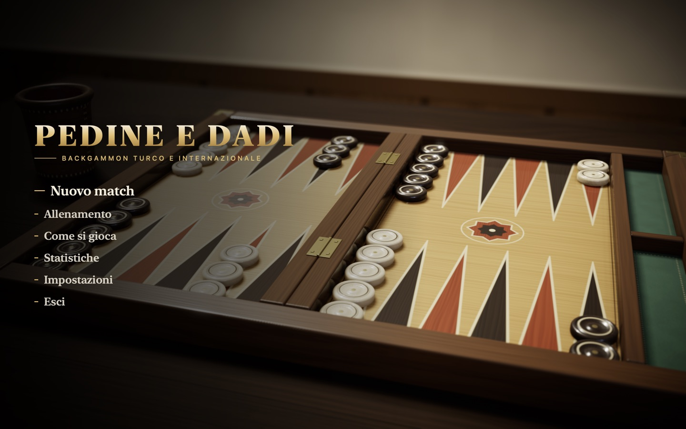
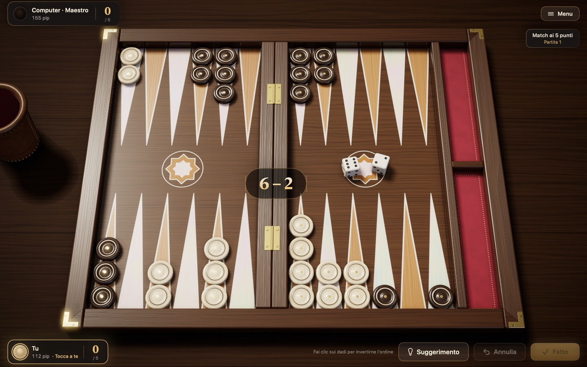
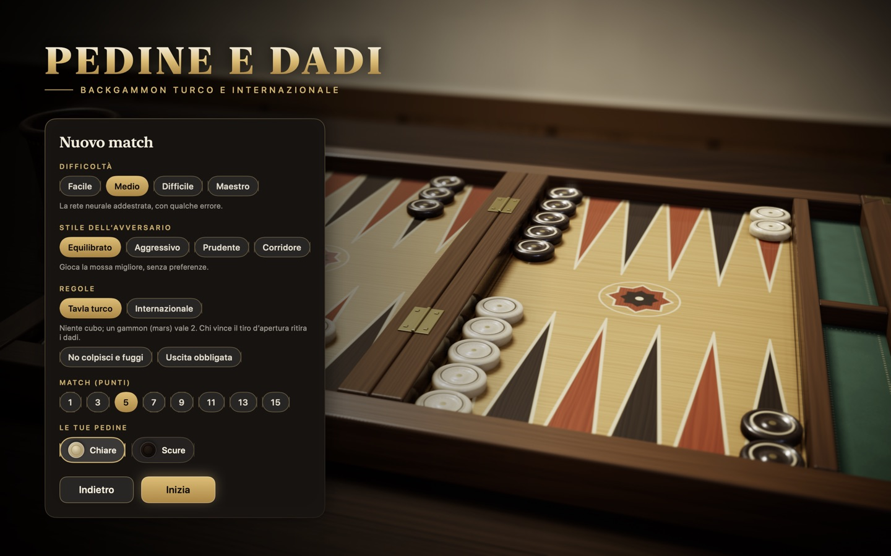
Reti neurali addestrate con oltre venti milioni di partite contro sé stesse (apprendimento TD) e con i propri rollout, un database esatto di 54.264 posizioni per l’uscita delle pedine e decisioni sul cubo e sull’abbandono che tengono conto del punteggio del match.
Regole turche e internazionali (cubo del raddoppio, backgammon, Crawford), match fino a 15 punti e sessioni (Jacoby, beaver, raccoon, raddoppi automatici), abbandono, suggerimenti, cronologia delle mosse con replay, esportazione (.mat, .sgf) e importazione (.mat, .sgf, .xg), più match salvati e un archivio.
Tutte le tue mosse analizzate dopo ogni partita e ogni match: voto, PR approssimativo e ogni errore sulla tavola (mossa migliore segnata, candidate con le loro perdite e una frase che spiega perché). L’Allenatore, che rileva gli errori sul momento; Analisi approfondita e Rollout completo, che rivalutano le candidate con migliaia di partite simulate.
Una nuova Posizione del giorno ogni giorno; Schede nate dai tuoi errori che tornano con la ripetizione spaziata; la Libreria delle aperture e l’Editor di posizioni; una Libreria con ricerca per le tue posizioni e i match salvati; l’analisi di tutto l’archivio in un colpo e l’andamento del tuo PR; posizioni e risultati da condividere come immagine.
Illuminazione fisicamente basata, ombre morbide delle dimensioni della lampada, anti-aliasing temporale, HDR, stanza e tavolo procedurali, dadi versati dal bussolotto e momenti di telecamera cinematografici, il tutto renderizzato con Metal.
Effetti modellati fisicamente, con timbri propri di ogni materiale e riverbero calcolato dalla stanza; un taqsim di oud Karplus‑Strong che passa da Nihavend a Hicaz, Rast, Uşşak e Hüseyni; pioggia facoltativa.
Tutto ciò che offre Pedine e Dadi, dalle regole agli strumenti di allenamento.
L’app non ha un proprio server e non richiede account; nessuna pubblicità, nessun tracciamento né analisi. I tuoi dati restano sul tuo dispositivo e, se vuoi, si sincronizzano tra i tuoi dispositivi tramite il tuo iCloud Drive.
Le regole del backgammon, i piani di gioco e l’uso di Pedine e Dadi, in un libro illustrato di sei capitoli. Leggilo online o scarica il PDF in una delle nove lingue dell’app; ogni edizione mostra l’app nella sua lingua.
85 pagine · 16,1 MB · PDF
In altre lingue: Türkçe · English · Français · Deutsch · Español · Português (Brasil) · Ελληνικά · Русский
Domande, suggerimenti e segnalazioni di errori: hasan_altintas@hotmail.com
Τουρκικό και Διεθνές Τάβλι · macOS και iPadOS
Το Πούλια και Ζάρια είναι ένα τρισδιάστατο παιχνίδι τουρκικού και διεθνούς ταβλιού, γραμμένο από την αρχή σε Swift και Metal. Το τάβλι, τα πούλια, τα ζάρια, το ποτήρι, το δωμάτιο, τα νερά του ξύλου, τα ηχητικά εφέ και η μουσική παράγονται εξ ολοκλήρου με κώδικα· δεν χρησιμοποιούνται έτοιμες εικόνες, μοντέλα ή αρχεία ήχου.


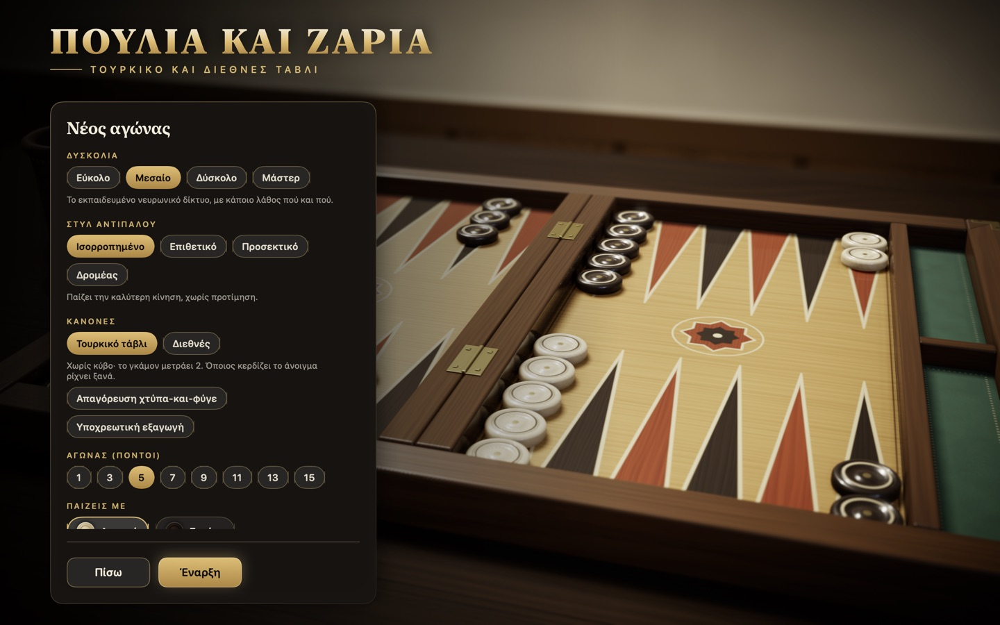
Νευρωνικά δίκτυα εκπαιδευμένα με πάνω από είκοσι εκατομμύρια παιχνίδια εναντίον του εαυτού τους (μάθηση TD) και με τις δικές τους προσομοιώσεις, ακριβής βάση μαζέματος 54.264 θέσεων, αποφάσεις κύβου και παραίτησης με γνώση του σκορ του αγώνα.
Τουρκικοί και διεθνείς κανόνες (κύβος διπλασιασμού, μπάκγκαμον, Crawford), αγώνες έως 15 πόντους και συνεδρίες (Jacoby, beaver, raccoon, αυτόματοι διπλασιασμοί), παραίτηση, υποδείξεις, ιστορικό κινήσεων με αναπαραγωγή, εξαγωγή (.mat, .sgf) και εισαγωγή (.mat, .sgf, .xg), πολλοί αποθηκευμένοι αγώνες και αρχείο.
Μετά από κάθε παιχνίδι και αγώνα κάθε κίνηση αναλύεται: βαθμός, κατά προσέγγιση PR και κάθε λάθος στο τάβλι (η καλύτερη κίνηση σημειωμένη, οι υποψήφιες με τις απώλειές τους και μια φράση που εξηγεί γιατί). Ο Προπονητής που πιάνει τα λάθη τη στιγμή που γίνονται· η Βαθιά Ανάλυση και η Πλήρης προσομοίωση με χιλιάδες προσομοιωμένες παρτίδες.
Η Θέση της Ημέρας, κάθε μέρα καινούργια· Κάρτες από τα δικά σου λάθη που επιστρέφουν με επανάληψη σε διαστήματα· η Βιβλιοθήκη Ανοιγμάτων και ο Επεξεργαστής Θέσης· η Βιβλιοθήκη με τις αποθηκευμένες θέσεις και τους αγώνες σου, με αναζήτηση· ανάλυση όλου του αρχείου μονομιάς και η τάση του PR σου· κοινοποίηση θέσης ή αποτελέσματος ως εικόνα.
Φωτισμός βασισμένος στη φυσική, απαλές σκιές από τη λάμπα, χρονική εξομάλυνση ακμών, HDR, διαδικαστικό δωμάτιο και τραπέζι, ζάρια που χύνονται από ποτήρι, κινηματογραφικές στιγμές κάμερας, όλα με Metal.
Εφέ με φυσική μοντελοποίηση, χροιές ανά υλικό και αντήχηση υπολογισμένη από το δωμάτιο· ταξίμι ουτιού Karplus‑Strong που περνά από το Nihavend στο Hicaz, το Rast, το Uşşak και το Hüseyni· προαιρετική βροχή.
Όλα όσα προσφέρει το Πούλια και Ζάρια, από τους κανόνες ως τα εργαλεία εξάσκησης.
Η εφαρμογή δεν έχει δικό της διακομιστή και δεν ζητά λογαριασμό· χωρίς διαφημίσεις, παρακολούθηση ή αναλυτικά στοιχεία. Τα δεδομένα σου μένουν στη συσκευή σου και μπορούν να συγχρονιστούν μεταξύ των συσκευών σου μέσω του iCloud Drive σου.
Οι κανόνες του ταβλιού, τα σχέδια παιχνιδιού και η χρήση του Πούλια και Ζάρια, σε ένα εικονογραφημένο βιβλίο έξι κεφαλαίων. Διάβασέ το online ή κατέβασε το PDF σε οποιαδήποτε από τις εννέα γλώσσες της εφαρμογής· κάθε έκδοση δείχνει την εφαρμογή στη γλώσσα της.
88 σελίδες · 16,6 MB · PDF
Σε άλλες γλώσσες: Türkçe · English · Français · Deutsch · Español · Português (Brasil) · Italiano · Русский
Για ερωτήσεις, προτάσεις και αναφορές σφαλμάτων: hasan_altintas@hotmail.com
Турецкие и международные нарды · macOS и iPadOS
Шашки и Кости — трёхмерные турецкие и международные нарды, написанные с нуля на Swift и Metal. Доска, шашки, зары, стакан, комната, текстура дерева, звуковые эффекты и музыка целиком создаются кодом; готовые изображения, модели и аудиофайлы не используются.


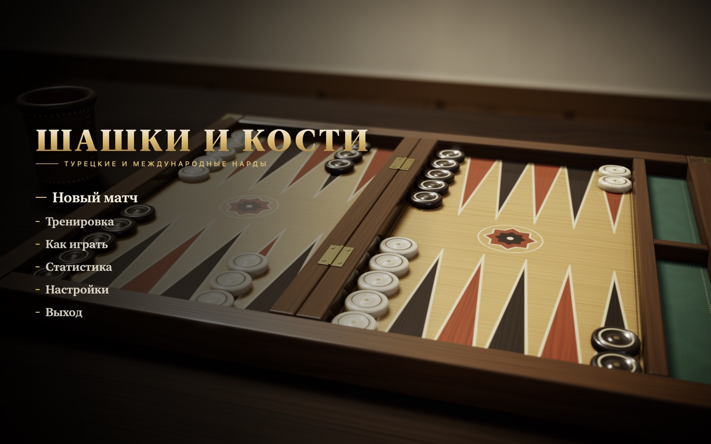
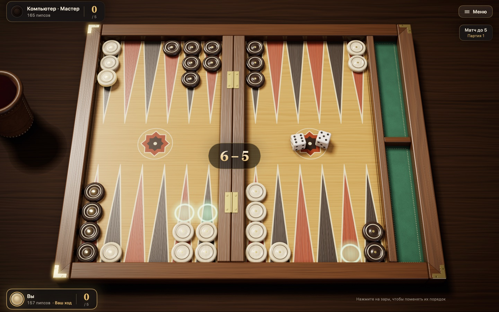
Нейросети, обученные более чем на двадцати миллионах партий игры с самими собой (TD-обучение) и на собственных симуляциях, точная база вывода из 54 264 позиций, решения по кубу и сдаче с учётом счёта матча.
Турецкие и международные правила (куб удвоения, бэкгаммон, Кроуфорд), матчи до 15 очков и сессии (Джекоби, бивер, ракун, автоматические удвоения), сдача, подсказки, история ходов с повтором, экспорт (.mat, .sgf) и импорт (.mat, .sgf, .xg), несколько сохранённых матчей и архив.
После каждой партии и матча анализируется каждый ход: оценка партии, примерный PR и любая ошибка на доске (лучший ход отмечен, кандидаты с их потерями и фраза, объясняющая почему). Тренер, который ловит ошибки сразу; Глубокий разбор и Полный роллаут, переоценивающие кандидатов тысячами симулированных партий.
Позиция дня, каждый день новая; Карточки из ваших собственных ошибок с интервальным повторением; Библиотека дебютов и Редактор позиции; Библиотека сохранённых позиций и матчей с поиском; разбор всего архива разом и тренд PR; делитесь позицией или результатом как картинкой.
Физически корректное освещение, мягкие тени от лампы, временное сглаживание, HDR, процедурные комната и стол, зары, высыпающиеся из стакана, кинематографичные движения камеры — всё на Metal.
Эффекты с физическим моделированием, тембры по материалам и реверберация, рассчитанная по комнате; таксим на уде (синтез Карплуса‑Стронга), переходящий из Нихавенда в Хиджаз, Раст, Ушшак и Хусейни; дождь по желанию.
Всё, что умеет приложение «Шашки и Кости»: от правил до инструментов тренировки.
У приложения нет собственного сервера, и оно не требует учётной записи; без рекламы, отслеживания и аналитики. Ваши данные остаются на вашем устройстве и при желании синхронизируются между вашими устройствами через ваш собственный iCloud Drive.
Правила нард, планы игры и работа с приложением Шашки и Кости в иллюстрированной книге из шести глав. Читайте онлайн или скачайте PDF на любом из девяти языков приложения; в каждом издании приложение показано на его языке.
88 стр. · 16,4 МБ · PDF
На других языках: Türkçe · English · Français · Deutsch · Español · Português (Brasil) · Italiano · Ελληνικά
Вопросы, предложения и сообщения об ошибках: hasan_altintas@hotmail.com